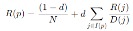

| Question | Answer |
|---|---|
| Write down different interesting technologies that you used in the project. | a. We used the Steam Web Api - through which we used familiar queries to check many games: what achievements (tags) the game has, average playing time and etc.
b. We also used BeautifulSoup - a Python library designed for extracting information from HTML websites. We used it to extract a description text for each game from its web page and also to extract a list of games according to categories that exist on the Steam website. |
| How long did your queries run? What does it depend on? Do you think this time can be improved? | The queries run in the range of 10-30 minutes depending on the amount of games (pages we searched for) and the amount of users we used for the database. For the purpose of improvement, it is possible to reduce the number of users by pre-filtering users with a low playing time or a low amount of games in general. |
| Are there hubs on the returned pages? authorities? Justify your answer | For the query to find games based on a game category, we provided the crawler with the Hubs (the categories) - and in this way, we received the Authorities (the games) that belong to that Hub. More details in section next answer's section. |
| Choose 10 pages that the crawler returned, and which have links between them. Calculate pageRank for each page, it is recommended to use a prepared script. Show the calculations and the final rating. | As part of this assignment, we ran another query where it receives categories of games that we referred to as hubs and by using them, the crawler returned us the most popular games for those categories, by extracting a suitable link (using the < a > tag). We defined these games as Authorities and the crawler saved them for us in a table in a csv file (attached in the submission). Of these, we chose 10 pages: 4 category pages (hubs) and 6 game pages (authorities) and performed a pageRank calculation based on the formula we learned in class:
 In our context: We neglected 'd'. N equals 10 pages. I(p) represents a set of categories that point to p (game). D(j) represents a set of games that category j points to. First step: At startup each page gets a rating of 1/10. Second step: Understanding how the ranking of each page is calculated based on the pages that point to it. • Since category pages only point to other pages (game pages) and no one points to them then their rating will remain 1/10. • The game pages receive referrals from several different categories, so it was necessary to calculate each one independently. Third step: Calculation of each rating of each game: Game Name: Counter-Strike 2 I(Counter−Strike 2)={ Action, Strategy } D(Action)=4 and D(Strategy)=3. R(Counter-Strike 2) = 0.1 + 0.1 / 4 + 0.1 / 3 = 0.1583 Game Name: ELDEN RING I(ELDEN RING)={ Action, RPG } D(Action)=4 and D(RPG)=4. R(ELDEN RING) = 0.1 + 0.1 / 4 + 0.1 / 4 = 0.15 Game Name: The Elder Scrolls® Online I(The Elder Scrolls® Online)={ Adventure, RPG, Action } D(Adventure)=3 and D(RPG)=4 D(Action)=4. R(The Elder Scrolls® Online) = 0.1 + 0.1 / 3 + 0.1 / 4 + 0.1 / 4 = 0.1833 Game Name: Baldur's Gate 3 I(Baldur's Gate 3)={ Adventure, RPG, Strategy } D(Adventure)=3 and D(RPG)=4 D(Strategy)=3. R(Baldur's Gate 3) = 0.1 + 0.1 / 3 + 0.1 / 4 + 0.1 / 3 = 0.1916 Game Name: The First Descendant I(Baldur's Gate 3)={ Adventure, Action} D(Adventure)=3 and D(Action)=4. R(Baldur's Gate 3) = 0.1 + 0.1 / 3 + 0.1 / 4 = 0.1583 Game Name: Once Human I(Once Human)={ Adventure, Action, RPG, Strategy} D(Adventure)=3 and D(Action)=4 D(RPG)=4 D(Strategy)=3. R(Once Human) = 0.1 + 0.1 / 3 + 0.1 / 4 + 0.1 / 4 + 0.1 / 3 = 0.2166 |
| Show two different users the rating from the previous section, in which case they should mark relevance and perform relevance feedback. Is it possible to suggest an adapted query in order to improve results? | We presented the findings to two friends who like computer games:
First User: The first user expressed a strong preference for adventure games And shared that he especially enjoys games like "The Elder Scrolls® Online" and "Baldur's Gate 3." He felt that these games were highly rated in the adventure category, because they provide the typical experiences of the genre. However, The user indicated a specific lack of attraction to the game "Once Human". He stated that this game is not considered a traditional adventure game in his eyes. He recommended that this game should be rated lower or even will be removed from the adventure category. The user emphasized a preference to see more classic adventure games, such as "Grand Theft Auto V" and "The First Descendant". Second user: The second user recently started playing "Baldur's Gate 3" and was very impressed with its placement in the RPG and strategy categories. He emphasized the game's strategic depth, which aligns well with his gaming preferences. In addition, he has expressed great interest in online games, making games like "The Elder Scrolls® Online" and "Destiny 2" particularly relevant to his taste. The user was satisfied also from the rating of "The Elder Scrolls® Online". The user also stated that the game "Once Human" is not particularly his favorite and therefore was rated lower compared to other games. |
In this exersize, we created a Python script that retrieves the top 10 games from Steam across six different categories: Action, Adventure, RPG, Strategy, Indie, and Casual. The script saves the game data into a CSV file and generates individual graph visualizations for each category. These graphs illustrate the categories as hubs and the top games as authorities, with edges connecting them, providing a clear and organized view of the top games within each category.